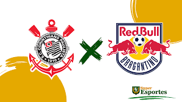

Corinthians Anuncia Novo Patrocinador
O Corinthians anunciou um novo patrocinador para a temporada, trazendo grandes expectativas para os próximos jogos. Saiba mais sobre o impacto dessa parceria.
Leia MaisData: 17/08/2024
Horário: 21:00
Local: Arena Corinthians
Transmissão: Globo, Premiere
Comprar IngressosData: 17/08/2024
Horário: 21h30
Local: Arena Corinthians
Competição: Brasileirão
Transmissão: Globo, Premiere
Comprar IngressosData: 25/08/2024
Horário: 16:00
Local: Arena Castelão
Transmissão: Globo, Premiere
Comprar IngressosData: 01/09/2024
Horário: 16:00
Local: Arena Corinthians
Transmissão: Globo, Premiere
Comprar IngressosO Corinthians anunciou um novo patrocinador para a temporada, trazendo grandes expectativas para os próximos jogos. Saiba mais sobre o impacto dessa parceria.
Leia MaisCorinthians finaliza preparação para receber o Red Bull Bragantino; veja provável escalaçã
Leia Mais